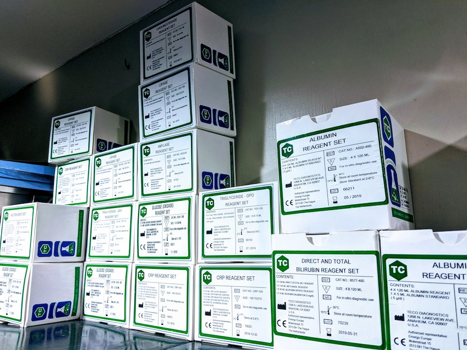
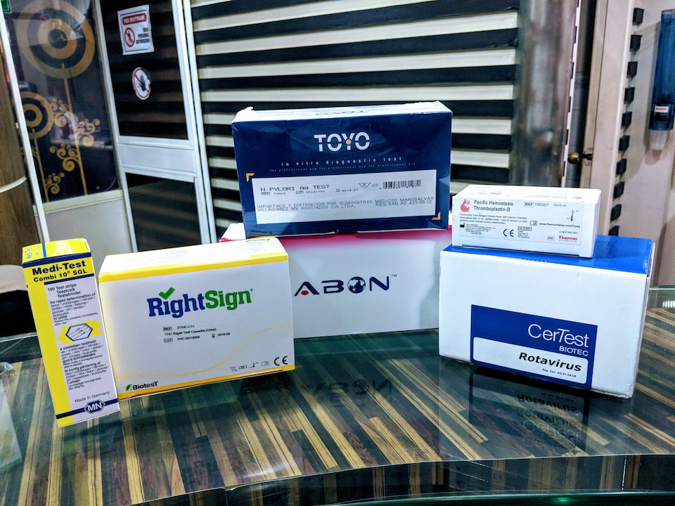
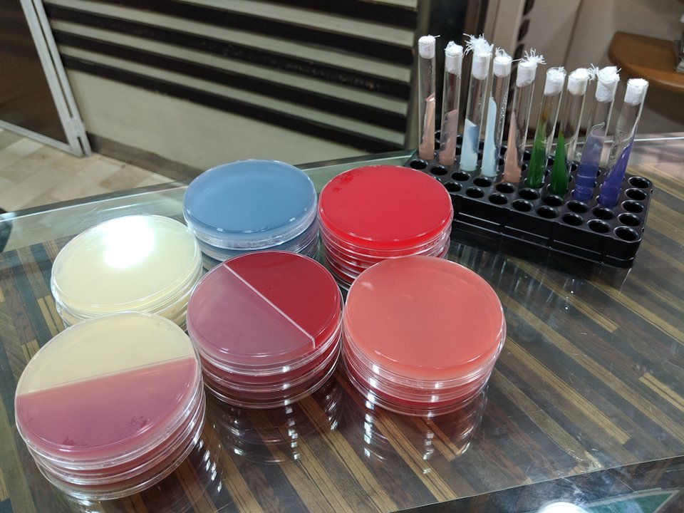
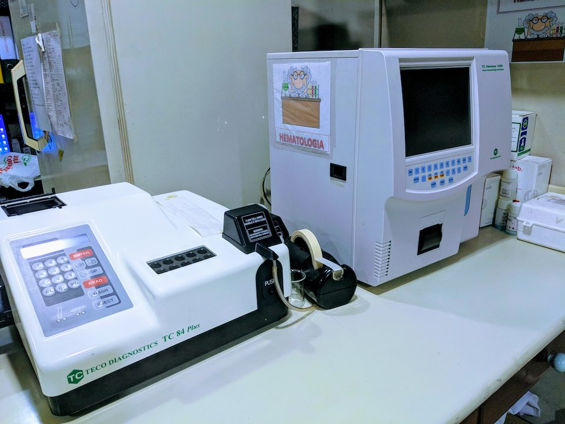

Sobre Nosotros
Teco Gram es una empresa que ofrece servicios de laboratorio clínico a la comunidad por más de 20 años. Somos representantes de Teco Diagnostics USA, en la línea de reactivos y equipos para laboratorios clínicos
Contamos con personal humano con alto nivel técnico, lo que nos permite brindar un servicio personalizado con calidez, precisión y excelencia.
Hemos consolidado una gran base de clientes, además de tener excelentes relaciones y haber suscrito contratos con empresas de medicina prepagada como SALUD S.A., MEDEC y otros.
Productos
Importamos equipos médicos, equipos de laboratorio clínico y reactivos. Trabajamos principalmente con los productos de Teco Diagnostics y traducimos todas sus técnicas al español.
Adicionalmente, también distribuimos productos de muchas otras marcas como ABON, Accurate, Alere, BIOPROVA, CerTest, CTK, BIOPROVA, RightSign, Pacific Hemostasis entre otros.
Ofrecemos agares preparados en cajas de petri. Agar con base sangre de cordero, Agar MacConkey, Mueller Hinton, C.L.E.D, manitol salado. Agares para pruebas bioquimicas en tubo de 13x100mL: Urea, motilidad, lisina, triple agar, indol motilidad, Nickerson, etc.
Servicios de Laboratorio
Nuestro laboratorio cuenta con modernas instalaciones, un staff de profesionales especializados en patología clínica y laboratorio clínico.
Nuestro personal de laboratorio pedriático cuenta con basta experiencia en extracción de muestras a niños para su tranquilidad.
Ofrecemos paquetes promocionales para empresas, exámenes preocupacionales y ocupacionales. Contamos con médicos especializados en medicina ocupacional.
Realizamos toma de muestras a domicilio con cita previa por teléfono o correo electrónico.
Enviamos resultados por correo eletrónico.
Servicios
- Hematología
- Inmunología
- Bioquímica
- Microbiología
- Hormonas
- Urianálisis
- Coproanálisis
- Marcadores Tumorales
- Anatomopatología
Contacto
E-mail: infotecogram@gmail.com

| Lunes a Viernes: | 7:30 - 18:00 |
| Sábados: | 8:30 - 12:00 |
Dirección: Nueva Kennedy Av. San Jorge 428 y la décima. Edificio Polimédico Costales al frente de la Fybecca de Plaza Coronel.